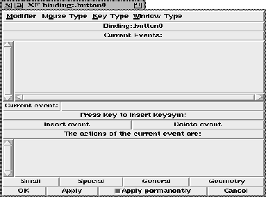

This procedure activates the binding dialog for the currently selected widget or the widget that was passed on as first parameter. The binding dialog allows the setting of bindings for this specific widget.

Figure: The procedure XFProcConfBinding
The menubar at the top contains various event patterns that are inserted into the event string when the menu item is selected. Below the menubar the currently modified widget is displayed. Clicking on the name flashes the widget in the application.
Below the widget name, a list shows all events that are defined for this widget. It is possible to hide events (i.e. all Tk events are hidden). To show/hide an event, the first line of the command that is bound to the event must contain the string ``# xf ignore me <level>'', where level is a number from 0 to 9. Each level can be turned on or of separately (both for displaying and saving). To display a level, the appropriate checkbutton in the (Options | General Options) dialog is toggled.
The entry below the event listbox contains the currently selected event, or the new event composed with the menubar or by hand. To insert or delete the event, the two buttons (Insert event) and (Delete event) are used. The text widget at the bottom shows the Tcl/Tk command that is bound to the currently selected event, or the new command that should be inserted.
The buttons at the bottom allow the calling of other dialog boxes for the widget configuration. There are also buttons to apply the changes (if they are not applied permanently), and to terminate the dialog.